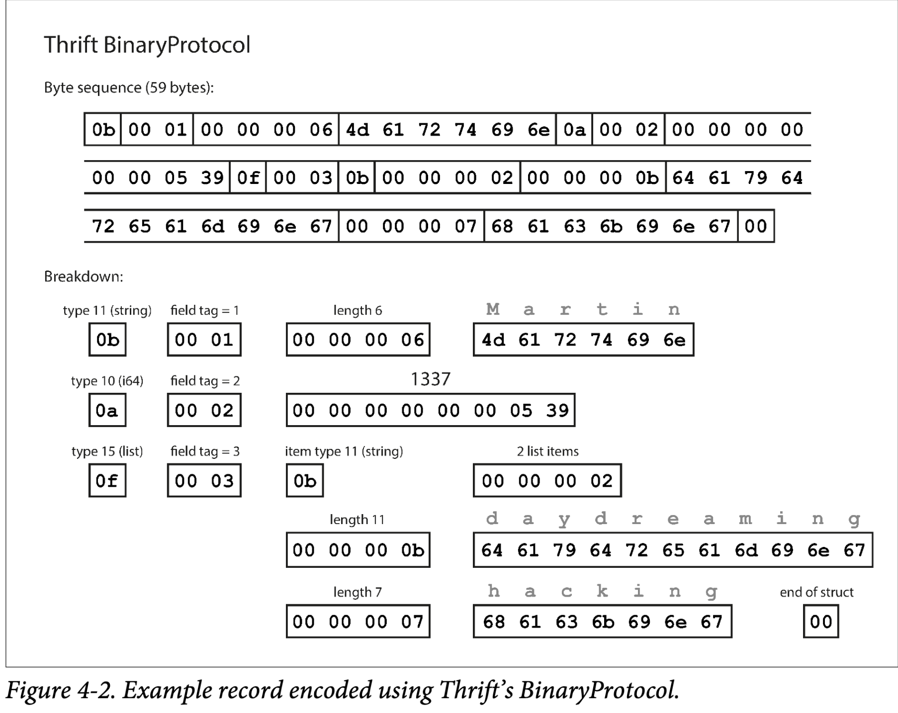

应用不可避免会随着时间而变化。随着新产品发布，用户需求更好被理解，或者业务环境的变化，增加特性或者修改特性。在第一章中我们介绍了演化的观点：我们应该在构建系统时考虑到系统方便修改。
在大多数场景中，对应用的功能变更也意味着存储的变化：可能需要新的字段或者记录类型，或者需要以新的方式表现数据。
在第二章中我们讨论了不同数据模型应对这种变化的方式。关系型数据库假设数据库中的所有数据符合一个 schema：即使 schema 也会改变（比如通过 ALTER 命令），在特定时间存在一个固定的 schema。相反，schema-on-read 数据库不会强制 schema，所以这种数据库中包含了新老格式数据的混合。
当数据格式或者 schema 改变，对应应用程序的代码需要修改（比如，增加一个字段，应用程序代码也要修改）。但是，在大型应用中，代码修改不会马上生效：
- server端的应用你可能希望进行滚动升级，一次将新版本部署到一些节点，检查新版本是否运行良好，然后再对全部节点执行升级。这需要服务不停机升级，并且鼓励更频繁的发布，需要更好的演进性
- client端的应用，用户可能并不会升级
这意味着新代码和老代码，新老数据格式会在系统中同时存在。为了系统持续运行，我们需要兼容：
- Backward compatibility 新代码可以读老代码写的数据
- Forward compatibility 老代码可以读新代码写的数据
向后兼容通常不难：新代码写的时候，是知道老代码是什么样的，所以直接实现兼容性。向前兼容可能会比较难，因为要求老代码忽略新代码。
本章我们讨论集中不同的编码数据格式，包括 JSON，XML， Protocol Buffers， Thrift 和 Avro。尤其是，我们要讨论它们如何处理 schema 变更，如何支持新老代码，新老数据同时存在。然后讨论将这些数据格式用于数据存储和通信：在 Web 服务，Representational State Transfer （REST），RPC，以及消息传递系统比如 actor 和 消息队列。
Formats for Encoding Data
程序中的数据表示至少两种：
- 内存中，数据表示为 objects, structs, lists, arrays, hash tables, trees等。这些数据结构对 CPU 访问做了优化
- 当你想写数据到硬盘或者通过网络发送，你必须将其编码成自包含的字节序列（比如，JSON 文档）。因为指针对其他进程没有意义，所以字节序列看起来与其在内存中的表示迥然不同
因此，我们需要两种表示之间的转换。从内存中表示到字节序列的转换称为 encoding（serialization or marshalling），反过来的过程称为 decoding（parsing, deserialization, unmarshalling）。
Serialization 同样用在了 transaction 的上下文中，但是具有完全不同的意义。为了避免疑义，本书中只用 encoding ，尽管 serializations 用的更多
因为这是一个很通用的问题，所以存在很多不同的库来解决。让我们先概览一下。
Language-Specific Formats
很多编程语言内建了序列化内存对象到字节序列的方法，比如Java 有 java.io.Serializable，Ruby 有Marshal，Python 有 pickle 等，也有一些第三方库，比如 Java 的 Kryo
这些序列化库很方便，可以用较少的代码完成。但是也有几个很明显的缺点：
- 只能用于特定语言，使用另一种语言读取比较困难
- 为了在相同的对象恢复数据，解码过程需要可以实例化 arbitrary class 【译者注：类似 Java 中的 Class】。这经常是安全问题的来源：如果攻击者获取你的应用然后从字节序列反序列化，他们可以实例化 arbitrary class，这就可以让他们做一些恶意攻击
- 版本管理做得不好：由于做得比较简单，所以他们通常在数据前后兼容上做的不好
- 效率通常一般
基于上述缺点，使用语言内建编码数据通常是个糟糕的选择
JSON, XML, and Binary Variants
多种语言读写方便的标准序列化，JSON 和 XML 。广为人知，广泛支持，同样的广泛为人诟病。XML 经常由于其冗余和过分复杂被人批评。JSON 的流行主要因为是 Web 浏览器内置支持（JavaScript 子集），以及相对于 XML 的简洁。CSV 是另一种语言无关的格式，但是能力不行
JSON，XML，CSV 都是文本格式，因此是人类可读的，除了语法问题，也有一些难以捉摸的问题：
- 歧义。在 XML 和 CSV 中，你不能区分是数字还是数字组成的字符串。JSON 不区分数字和字符创，同样不区分整数还是浮点数，并且没有精度 处理大数的时候有问题；有些例子略
- JSON 和 XML 对于 Unicode 表示支持很好，但是不支持二进制字符串。二进制字符串很有用，人们使用 Base64 将二进制字符串编码来规避这个问题。这样可行，但是增大了 33% 的数据规模
- XML 和 JSON 都有可选 schema，这些 schema 语言很强大，因此也很复杂，学习难度也比较高
- CSV 没有很多 schema，只是在应用中定义每行和列数据，语义相当模糊
尽管存在这些缺陷，JSON，XML 和 CSV 对于很多场景足够好，仍然很受欢迎，特别作为数据交换格式。在这些情况下，只要人们对于数据格式达成一致，通常数据的是否漂亮，性能是否高都不是很重要
Binary encoding
对于只在组织内部使用的数据，没有使用公共编码格式的压力。比如，你可以选择尽可能紧密而且快的编码。对于小的数据集，收益可能不明显，但是一旦数据量变大，数据格式的选择变得很重要
JSON 比 XML 简洁，但是相对于二进制编码都比较冗长。这个明显的事实引出了很多关于 JSON 的二进制编码（MessagePack, BSON, BJSON, UBJSON 等），XML 的（WBXML 和 Fast Infoset。这些格式已经在各处被使用，但是没有像 JSON 和 XML 本身一样广为人知。
这里关于 MessagePack 的详细展开略过
Thrift and Protocol Buffers
Apache Thrift 和 Protocol Buffers(protobuf) 都是基于相同原则的二进制编码库。PB 由 Google 开发，Thrift 由 Facebook 开发，都在 2007~08 年开源。
Thrift 和 PB 都要求数据 schema。比如下面的 Thrift 代码
struct Person {
1: required string userName,
2: optional i64 favoriteNumber,
3: optional list<string> interests
}
PB 相等的代码为
message Person {
required string user_name = 1;
optional int64 favoriite_number = 2;
repeated string interests = 3;
}
Thrift 和 PB 都有各种语言的代码生成器。你的应用可以使用生成的代码来编码解码 records of the schema
编码过程是什么样？令人困惑的是，Thrift 有两种二进制编码格式，BinaryProtocol 和 CompactProtocol。我们首先看 BinaryProtocol。编码
{
"userName": "Martin",
"favoriteNumber": 1337,
"interests": ["daydreaming", "hacking"]
}
为 59 字节如图 Figure 4-2

每个 field 有一个类型注解（指出是字符串，整数，list 等），以及一个长度标识（数据的长度）。数据也被编码为 ACSII
没有数据名称，使用 field tags，只是数字。这些数字出现在 shema 定义中
Thrift CompactProtocol 语义上与 BinaryProtocol 是相等的，如图 Figure 4-3 ，将相同的信息更紧凑使得数据压缩到 34 字节。通过将 field type 和 tag number 打包到一个字节中，并使用变长整数来做到。比如数字 1337 不使用完整的 8 个字节，编码为两个字节，每个字节的顶部表示是否有更多字节。这意味着一个字节可以编码 -64 到 63 的数，-8192 到 8191 可以使用两个字节编码等，更大的数使用更多的字节。
最后，PB 只有一种二进制编码格式，如图 Figure 4-4。关于PB的详情请点击这里。使用不同的方式压缩数据，类似于 Thrift CompactProtocol，PB 将数据压缩到 33 字节
一个细节需要注意：在前面的 schema 中，每 field 被标注为 required 或者 optional，但是对于编码没有意义（就是编码中不会体现这个）。不同的 required 在运行时会检查，如果该 field 没有设置就会失败，容易发现 bug
Field tags and schema evolution
我们先前提到了 schema 可能会随着时间被修改。我们称为 schema evolution。Thrift 和 PB 如何处理这种兼容呢？
我们看到，编码后的 record 就是编码 field 的一连串字节。每个 field 通过 tag number，annotated with a datatype 标识。如果 field 没有被设置，简单省略。这里你可以看到 field tag 对于编码数据至关重要。你可以改变 field 的名字，因为编码的数据并不关联 filed 名字，但是不能改变 field tag，这将会使得现有的编码数据失效。
你可以加入新的 field，提供一个新的 field tag。如果老代码（不知道你新增的 field tag number）尝试读取新代码写的数据，这个新的 tag number 不被识别，简单的忽略过去。datatype 注解允许解析器知道多少字节被忽略。这样就建立起了前向兼容：老代码可以读取新数据
那么后向兼容呢？每 field 有唯一的 tag number，新代码可以读老数据，因为 tag number 意义相同。你只需要注意一个细节，不要加新的 require field.
删除一个 field 就像加入一个 field 一样，你只能删除一个 optional field，并且不能重复使用删除的 tag number。
Datatypes and schema evolution
可以改变一个 field 的 datatype 吗？可以的，仔细阅读文档就知道，但是这是有风险的，可能丢失精度或者截断数据。例如，将 32 位整数变为 64 位。新代码可以轻松读取老代码写的数据，因为解析器会自动填充0，但是老代码读到新代码的数据时，老代码还是认为是32位数据，64 位数据会被截断。
PB 的细节是没有 list 或者 arrary 数据类型，但是有一个 repeated 标记。如图 Figure 4-4，编码 repeated field 时，相同 field tag number 会出现多次。这有一个好的结果就是可以将 optional 改为 repeated。新代码读老代码就是一个或者零个数据；老代码只会读到新代码的最后一个数据
Thrift 有表明的 list 数据类型，使用列表元素的数据类型进行参数化。这就不能像 PB 一样将改变类型，但是有可以嵌套的优势
Avro
Apache Avro 是另一种不同于 Thrift 和 Protobuffer 的二进制编码。始于 2009 年的 Hadoop 一个子项目，由于 Thrift 不太适合 Hadoop 使用
具体介绍略
The Merits of Schemas
正如我们所见，Protobuffer， Thrift 和 Avro 都是用 shema 来描述二进制编码格式。他们的 shema 语言比 XML 和 JSON 更简单，并且支持更详细的检查规则。由于 PB，Thrift 和 Avro 易用易实现，所以对它们的支持在编程语言中很广泛。
这些编码基于的想法都不是新的，例如，它们与 ASN.1（于1984年首次定义的标准化序列化语言）有很多共同点。ASN.1 可以用来定义不同的网络协议，其二进制编码（DER）还被用于编码 SSL certificates（X.509）。ASN.1 使用 tag number 支持 shema evolution，PB 和 Thrift 与之类似。但是因为非常复杂并且文档很烂，ASN.1 对于新应用来说并不是很好的选择。
很多数据系统实现了专有的二进制编码。比如，大多数关系型数据库有网络协议。这些协议通常用于特定的数据库，数据库供应商提供驱动（例如，使用 ODBC JDBC API），从数据库的网络响应中解码为内存结构
所以，我们看到尽管文本格式比如 JSON，XML 和 CSV 广为传播，基于 schema 的二进制编码也是一个切实可行的选择，它们还有一些良好性质：
- 相比二进制 JSON，有更好的压缩比
- schema 是一种有价值的文档形式，因为需要解码，你可以确定它是最新的（手动维护的文档很容易与现实发生分歧）
- 更好的前后兼容性
- 对于静态语言用户，从 schema 生成代码很有用，可以在编译器检查类型
总之，schema evolution 得到 schemaless/schema-on-read JSON 数据库提供的相似的灵活性，并且为你的数据提供了更好的保证和工具。
Modes of Dataflow
本章开始，我们说，无论何时你想要将一些数据发送给另一个没有共享内存的进程--比如，通过网络发送数据，或者写入文件--你需要将其编码为字节序列。然后我们讨论了不同的编码方式.
我们讨论了前后向兼容性，对于演进能力非常重要（可以方面的升级系统，而不用做过多修改）。兼容性就是一个进程编码，另一个进程可以解码。
这是个相当抽象的思想---有很多方法将数据从一个进程传递到另一个进程。谁编码数据，谁解码数据？在本省剩余部分，我们介绍最通用的集中传递数据方法
- 通过数据库
- 通过调用
- 通过异步消息传递系统
Dataflow Through Databases
Dataflow Through Services: REST and RPC
Message-Passing Dataflow
Summary
本章中，我们讨论了几种将数据结构转化为网络或者硬盘字节序列的方法。我们看到这些编码细节不仅会影响它们的效率，更重要的是，也影响应用和你的部署选项。
特别地，很多服务需要支持滚动升级，新版本部署一部分节点，而不是同时部署到所有节点。滚动升级允许在服务不停机的情况下升级服务，并使部署风险降低。这些属性对于演进性非常有益，使得应用的变更更加简单
在滚动升级过程中，或者其他的原因，我们必须假设在不同的节点运行着不同版本的代码。因此，系统中数据编码的兼容性也很重要。
我们讨论了几种数据编码格式和它们的兼容性：
- 特定语言提供的编码方法，一般兼容性很差
- 文本格式，比如 JSON，XML，CSV。兼容性依赖于你怎么使用它们。有可选的 schema 语言，有些情况有用，有些反而没用。这些格式对于数据类型是含糊的，所以你需要特别注意字符串和数字类型
- 二进制 schema-drivern 格式，比如 Thrift，PB 和 Arvo，可以编码的同时压缩数据，并且有很好的语义兼容性。可以生成静态语言的代码。但是，它们也有缺点，就是可读性差
我们还讨论了几种 dataflow 模式，表明不同场景中数据编码（序列化）的重要性：
- 数据库，写入数据库的进程序列化数据，从数据库读取数据的进程反序列化数据
- RCP 和 REST APIs。客户端序列化请求，服务端反序列化请求并序列化响应，客户端反序列化响应
- 异步消息传递系统。发送消息的节点序列化，接收消息的节点反序列化
我们可以得出结论，前后向兼容性和滚动升级是可达成的。你的应用可以持续演进并快速频率部署。